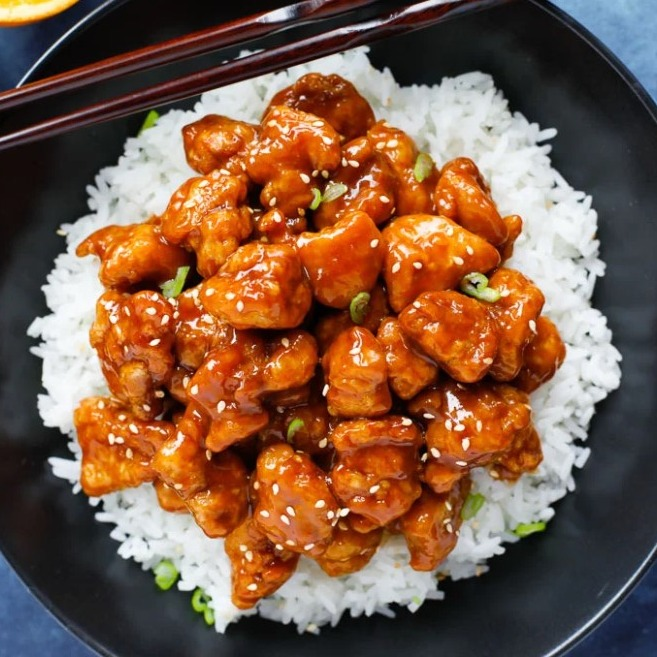

Our Best Dishes
THE ORIGINAL ORANGE CHICKEN is inspired by a well-known appetizer called chenpi niurou (tangerine peel beef), in which slices of boneless beef are marinated deep-fried and then wok-cooked with dried chilies, Sichuan pepper, and tangerine peel. We've substituted chicken for beef, and introduced an element of sweet and sour alongside the citrus and chili notes.

TERIYAKI CHICKEN In Hong Kong cooking, you'll find pork chops and large pieces of chicken due to the territory's long history of contact with European food cultures. Oftentimes, meat is served over rice with a sauce either drizzled on top or on the side. Our Grilled Teriyaki Chicken is inspired by the East-Meets-West Hong Kong-style chicken steak, and we've paired it with its own Japanese teriyaki sauce.

BROCCOLI BEEF Our Broccoli Beef takes a cue from Hong Kong cooking, where sliced beef may be stir-fried in a sauce enriched by oyster sauce, and complemented by a vibrant green vegetable such as Chinese broccoli (jie lan) or water spinach. The Cantonese are brilliant at the art of stir-frying, and in particular, at marinating and tenderizing meat so that it keeps its silken tenderness.